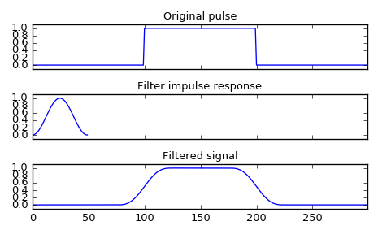

scipy.signal.convolve¶
-
scipy.signal.convolve(in1, in2, mode='full', method='auto')[source]¶ Convolve two N-dimensional arrays.
Convolve in1 and in2, with the output size determined by the mode argument.
Parameters: in1 : array_like
First input.
in2 : array_like
Second input. Should have the same number of dimensions as in1.
mode : str {‘full’, ‘valid’, ‘same’}, optional
A string indicating the size of the output:
fullThe output is the full discrete linear convolution of the inputs. (Default)
validThe output consists only of those elements that do not rely on the zero-padding. In ‘valid’ mode, either in1 or in2 must be at least as large as the other in every dimension.
sameThe output is the same size as in1, centered with respect to the ‘full’ output.
method : str {‘auto’, ‘direct’, ‘fft’}, optional
A string indicating which method to use to calculate the convolution.
directThe convolution is determined directly from sums, the definition of convolution.
fftThe Fourier Transform is used to perform the convolution by calling
fftconvolve.autoAutomatically chooses direct or Fourier method based on an estimate of which is faster (default). See Notes for more detail.
New in version 0.19.0.
Returns: convolve : array
An N-dimensional array containing a subset of the discrete linear convolution of in1 with in2.
See also
numpy.polymul- performs polynomial multiplication (same operation, but also accepts poly1d objects)
choose_conv_method- chooses the fastest appropriate convolution method
Notes
By default,
convolveandcorrelateusemethod='auto', which callschoose_conv_methodto choose the fastest method using pre-computed values (choose_conv_methodcan also measure real-world timing with a keyword argument). Becausefftconvolverelies on floating point numbers, there are certain constraints that may force method=direct (more detail inchoose_conv_methoddocstring).Examples
Smooth a square pulse using a Hann window:
>>> from scipy import signal >>> sig = np.repeat([0., 1., 0.], 100) >>> win = signal.hann(50) >>> filtered = signal.convolve(sig, win, mode='same') / sum(win)
>>> import matplotlib.pyplot as plt >>> fig, (ax_orig, ax_win, ax_filt) = plt.subplots(3, 1, sharex=True) >>> ax_orig.plot(sig) >>> ax_orig.set_title('Original pulse') >>> ax_orig.margins(0, 0.1) >>> ax_win.plot(win) >>> ax_win.set_title('Filter impulse response') >>> ax_win.margins(0, 0.1) >>> ax_filt.plot(filtered) >>> ax_filt.set_title('Filtered signal') >>> ax_filt.margins(0, 0.1) >>> fig.tight_layout() >>> fig.show()
